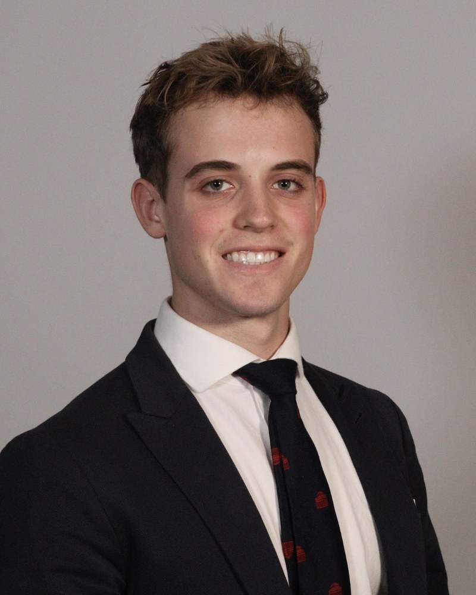

SolidWorks and Fusion 360
Skilled at 3D modeling, design iteration, and flow simulation
Mechanical Engineering and Physics · Northeastern University · Class of 2028
I'm a mechanical engineering and physics student at Northeastern University, graduating in 2028. Most of my work has been instrumentation: pressure vessels, test rigs, fixtures, and enclosures built to make a measurement possible under conditions a bench cannot reproduce.
I'm looking for co-op and research work in aerospace and energy generation, particularly thermal protection and propulsion testing, turbomachinery, and power-cycle instrumentation. In both fields the system operates where an instrument is difficult to place, which puts the engineering in the design of the experiment rather than the analysis. My interest in energy came out of studying fluid mechanics in Panama through Northeastern's Dialogue of Civilizations, working through the Canal locks, a wind farm at Penonomé, and hydroelectric plants in the Chiriquí highlands.

Skilled at 3D modeling, design iteration, and flow simulation
Proficient in SLA and FDM printing, CNC milling, molding, and laser cutting
Experience with test apparatus design, closed-loop control, and mechanical testing
I completed my first co-op at MIT's Lab for Translational Engineering, where I am currently continuing my research. I design and fabricate device hardware and the apparatus used to test it. The work runs from CAD through printing and machining to in-vivo trials, and a good share of it is diagnosis: figuring out why a prototype leaks, why a channel won't flow, or why a measurement doesn't reflect what the setup is actually doing. Before that I interned at FLX Solutions, writing software to automate internal processes, including a machine-learning pipeline for digitizing handwritten records.